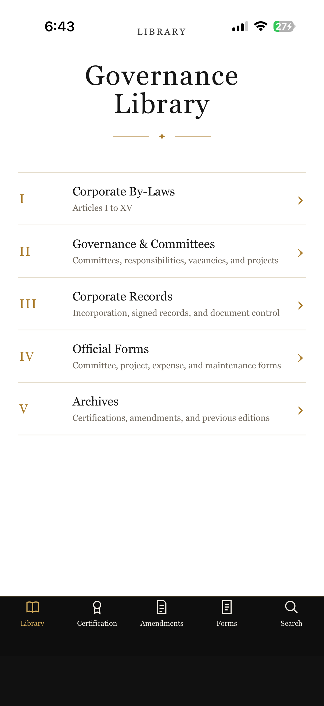

Meeting preparation
Collect committee reports, identify missing submissions, carry unfinished business forward and build a structured agenda.
A connected governance environment for meetings, committees, projects, annual comparisons, governing records and institutional continuity.
Collect committee reports, identify missing submissions, carry unfinished business forward and build a structured agenda.
Record attendance, motions, decisions, approvals and follow-up responsibilities in a connected workflow.
Prepare the meeting record for Secretary review without recreating the structure after every meeting.
Give each committee a role-specific workspace for its mandate, projects, tasks, evidence and reports.
Compare governing documents against the jurisdiction and governing authorities configured for the organization.
Assign identified issues, gather evidence, track professional review and preserve the final resolution.
ORE presents bylaws, constitutions, amendments, certifications, forms and archives in a readable environment designed to remain useful through future leadership changes.
